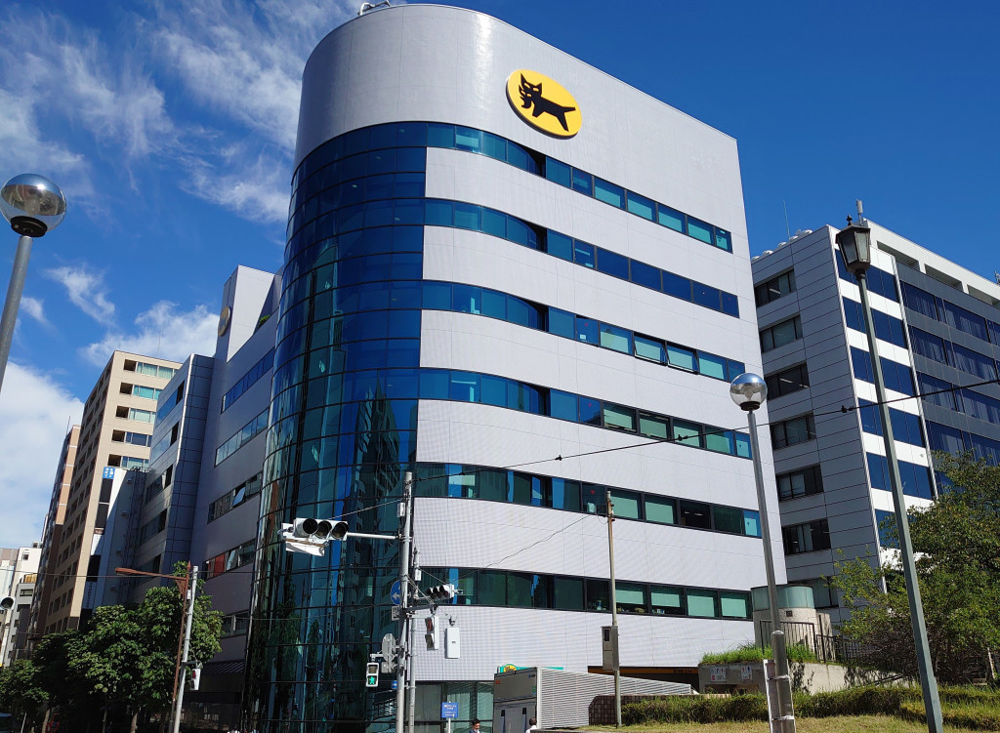

<!DOCTYPE html>
<html>

<head>
  <meta charset="utf-8">
  <title>Map&amp;Geolocation</title>
  <style>
    body {
      margin: 0;
      padding: 0;
      width: 100%;
      height: 100%;
    }
  </style>
</head>

<body>
  <!-- MapArea -->
  <div id="view"></div>
  <div id="myMap" style="width:50%;height:50%;"></div>
  <!-- /MapArea -->

  <!-- <section>
    <p>あと<span id="timer"></span>で移転</p>
  </section>
   -->
  
   <!-- jQuery&GoogleMapsAPI -->
  <script src="https://code.jquery.com/jquery-2.1.4.min.js"></script>
  <script src='https://www.bing.com/api/maps/mapcontrol?callback=GetMap&key=ArWJ-F8q_J8kFpzzehaAW5EZdcJ40c_vMDfUqVxRfarFK3z4CjA6yskwH59ofHgF'
    async defer></script>
  <script src="js/BmapQuery.js"></script>
  <script>
    //****************************************
    //最初に実行する関数
    //****************************************
    function GetMap(){
      navigator.geolocation.getCurrentPosition(mapsInit,mapsError,set);
    }

    //****************************************
    //成功関数
    //****************************************
    let map;

    function mapsInit(position){

      // lat=緯度 lon=経度　を取得
      const lat = position.coords.latitude;
      const lon = position.coords.longitude;

      //Map表示
      map = new Bmap("#myMap");
      map.startMap(lat,lon,"load",25);

      //pinを追加
      //   let pin = map.pin(lat,lon,"#ff0000");
      //詳細ボックスを入れる*****************************

      // <p></p>
      
      // const options = [];
      // options[0]={
      //     "lat":35.670123,
      //     "lon":139.775863,
      //     "title":"ヤマト運輸株式会社",
      //     "pinColor":"#ff0000",
      //     "height":300,
      //     "width":300,
      //     "discription": 'ヤマト運輸株式会社は、日本の宅配便事業を行う企業である。'
      //     // 
      // };

      // ダイアログボックスの表示
      'use strict';
      console.log(window.confirm('ヤマト運輸本社位置に移っていいですか？'));

      // function countdown(due) {
      //   const now = new Date();

      //   const rest =due.getTime() - now.getTime();
      //   const sec = Math.floor(rest / 1000) % 60;
      //   const min = Math.floor(rest / 1000 / 60) % 60;
      //   const hours = Math.floor(rest / 1000 / 60 / 60) % 24;
      //   const days = Math.floor(rest / 1000 / 60/ 60 /24) ;
      //   const count = [days, hours, min, sec];

      //   return count;
      // }

      // let goal = new Date();
      // goal.setHours(23);
      // goal.setMinutes(59);      
      // goal.setSeconds(59);

      // console.log(countdown(goal));
      // const counter = countdown(goal);
      // const time = '${counter[1]}時間${counter[2]}分${counter[3]秒';
      // document.goalElemntById('timer').textContent = time;

      // グレースケールにする
      setTimeout(function(){
      map.changeMap(35.670123, 139.775863, "canvasDark", 15);
      },6000);
      //     //Infoboxを追加
      map.infobox(lat, lon, "ヤマト運輸株式会社", "ヤマト運輸株式会社は、日本の宅配便事業を行う企業である。");
    
      //   const options = [];
      // options[0]={
      //     "lat":35.670123,
      //     "lon":139.775863,
      //     "title":"ヤマト運輸株式会社",
      //     "pinColor":"#ff0000",
      //     "height":300,
      //     "width":300,
      //     "discription": 'ヤマト運輸株式会社は、日本の宅配便事業を行う企業である。'
          // 
      // };
    };
      
    // Circleつくる 
        // //------------------------------------------------------------------------
        // //3.Circle Add
        // //  circleSet( Meter, style={pinColor,fillColor,strokeWidth} );
        // //------------------------------------------------------------------------
        // //Blue
        // const style1 = {
        //     pinColor:"#0000ff",
        //     fillColor:"rgba(0,0,100,0.6)",
        //     strokeWidth:1
        // };
        // map.circle(1000, style1); //1000m=1km

    // //------------------------------------------------------------------------
    // //2. Display Map
    // //   startMap(lat, lon, "MapType", Zoom[1~20]);
    // //   MapType:[load, aerial,canvasDark,canvasLight,birdseye,grayscale,streetside]
    // //--------------------------------------------------

    // //------------------------------------------------------------------------
    // //3. Directions
    // // map.direction("#rootView", "from" , "to", waypoint[array]);
    // // !! For confirmation, set the parameters for each country !!
    // // +  [ English => https://www.bing.com/...&setLang=en&setMkt=en-US ]
    // // +  [ Japan   => https://www.bing.com/...&setLang=ja&setMkt=ja-JP ]
    // //------------------------------------------------------------------------
    // document.getElementById("search").onclick = function () {
    //     //Get From,To
    //     const from  = document.getElementById("from").value;  //StartPoint
    //     const to    = document.getElementById("to").value;    //EndPoint
    //     const mode  = document.getElementById("mode").value;  //RouteMode[walking,driving]
    //     const array = ["Bellevue", "Yarrow Point"];           //Waypoints...
    //     map.direction("#direction", mode, from, to, array);   //Direction Methed

        //No Waypoint.
        //map.direction("#direction", from , to, []);

    // };


    //****************************************
    //失敗関数
    //****************************************
    function mapsError(error) {
      let e = "";
      if (error.code == 1) { //1＝位置情報取得が許可されてない（ブラウザの設定）
        e = "位置情報が許可されてません";
      }
      if (error.code == 2) { //2＝現在地を特定できない
        e = "現在位置を特定できません";
      }
      if (error.code == 3) { //3＝位置情報を取得する前にタイムアウトになった場合
        e = "位置情報を取得する前にタイムアウトになりました";
      }
      alert("エラー：" + e);
    };


    

    //****************************************
    //オプション設定
    //****************************************
    const set = {
      enableHighAccuracy: true, //より高精度な位置を求める
      maximumAge: 20000, //最後の現在地情報取得が20秒以内であればその情報を再利用する設定
      timeout: 10000 //10秒以内に現在地情報を取得できなければ、処理を終了
    };
  </script>
</body>

</html>